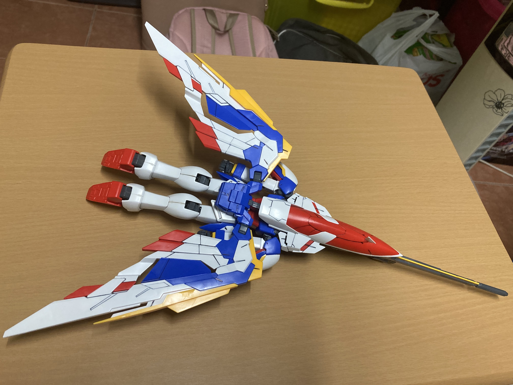

WHAT IS GUNPLA ?

Gunpla refers to "Gundam Models", plastic and non-plastic model kits depicting the mechas, vehicles and characters of the fictional Mobile Suit Gundam universe. These kits have become popular among anime fans and model-lovers, especially in Japan and in other nearby Asian countries since 1980s. The popularity of Gundam models increased in the 1990s with North America and Europe being exposed to Gundam through television, video and manga. These Gundam Models may also be called Gunpla (ガンプラ, Ganpura?), a portmanteau of "Gundam plastic model". "Gunpla" more commonly refers to the practice of building Gundam models, rather than the models themselves.
MY GUNPLA
Wing Gundam EW
